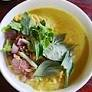

Home
Nom Banh Chok

Description
Nom Banh Chok is a traditional Cambodian rice noodle dish served with a
green fish curry gravy and fresh vegetables.
Ingredients
- rice noodles
- fish (boiled and flaked)
- lemongrass, turmeric, galangal (for curry paste)
- coconut milk
- fresh herbs and vegetables (banana flower, cucumber, mint)
Steps
- Prepare curry paste with lemongrass, turmeric, and galangal.
- Cook the paste with coconut milk and add flaked fish.
- Boil rice noodles until soft and drain.
- Pour curry over noodles and top with sliced vegetables and herbs.